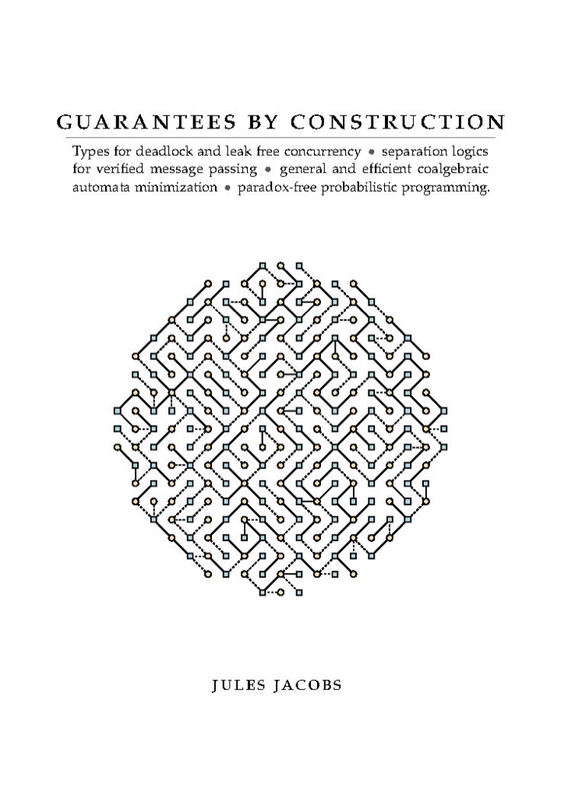

The thesis designs systems in which good properties follow by construction. Linear type systems make concurrent programs with locks and channels deadlock and leak free; separation logics verify message-passing programs; a change to probabilistic languages removes the paradoxes of conditioning on measure-zero events; and one coalgebraic algorithm minimizes many kinds of automata efficiently.

Read the paperThis thesis is about type systems for deadlock and leak free concurrency, separation logics for verified message passing, paradox-free probabilistic programming, and general and efficient coalgebraic automata minimization. In each case we aspire to guarantee beneficial properties ‘by construction’, as inherent consequences of the design of the system:
Types for deadlock and memory leak-free concurrency: Languages such as Rust guarantee memory safety and race freedom by type checking, but Rust programs can deadlock and leak memory. By enforing a carefully designed linear typing discipline, we obtain new concurrent languages with locks and channels in which deadlock freedom and memory leak freedom are guaranteed by type checking. A key challenge is proving this formally, for which we introduce a proof technique called connectivity graphs.
Separation logics for verified message passing: We show that concurrent separation logic and message passing are a perfect match, by using nested invariants to markedly simplify the soundness proof of an Actris-style separation logic for the verification of message passing programs. We then develop a new separation logic for verifying that message passing programs are deadlock free and memory leak free. These properties follow automatically from the linearity of the separation logic, without any additional proof obligations.
Paradox-free probabilistic programming: Probabilistic modeling languages suffer from paradoxes when conditioning on events of measure zero. This can even lead to different answers depending on whether the modeler is working in metric or imperial units. We show that we can avoid these paradoxes with a simple change to the modeling language. The resulting language guarantees that all probabilistic programs are invariant under change of parameterization, and its semantics of conditioning on events of measure zero relate to conditioning on events of positive measure in a natural way.
General and efficient coalgebraic automata minimization: A variety of automaton types and minimization algorithms exist, often tailored to specific cases. By imposing a coalgebraic structure on automata, we can exploit their shared characteristics. This allows us to develop a unified minimization algorithm that works across a general class of automata, while being efficient both in theory and in practice.
@book{jacobs2024thesis,
title = {Guarantees by Construction},
ISBN = {9789493296541},
url = {https://doi.org/10.54195/9789493296541},
DOI = {10.54195/9789493296541},
publisher = {Radboud University Press},
author = {Jacobs, Jules},
year = {2024},
month = June
}